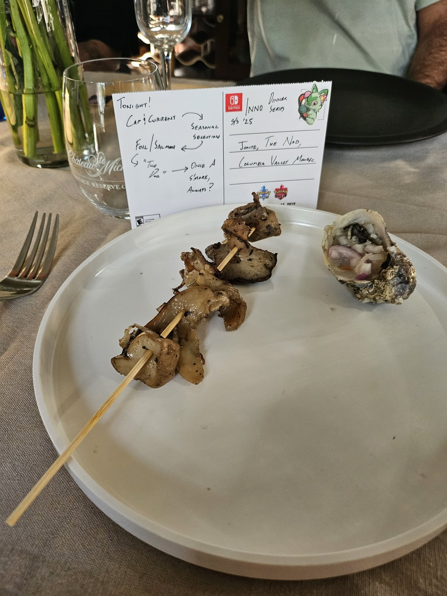
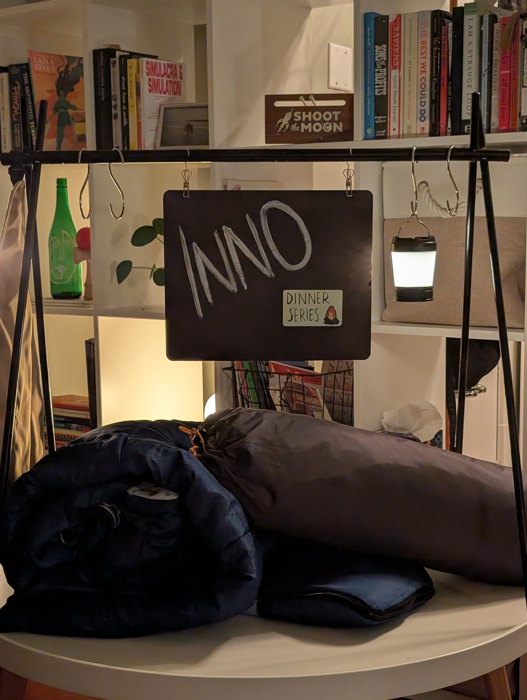
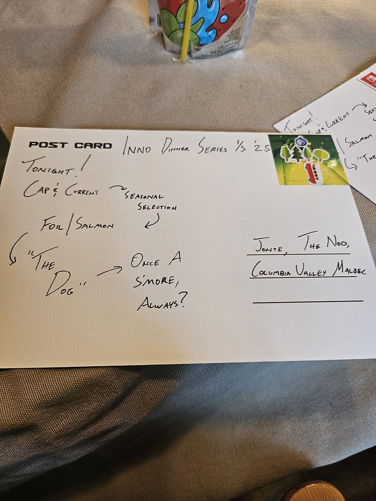
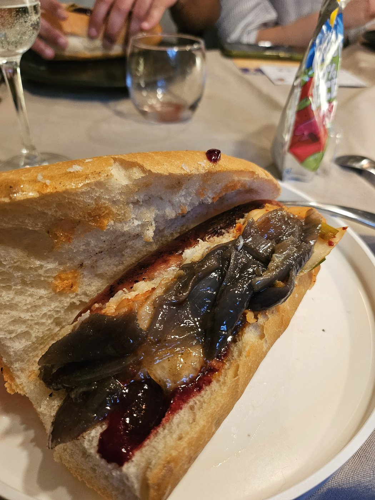
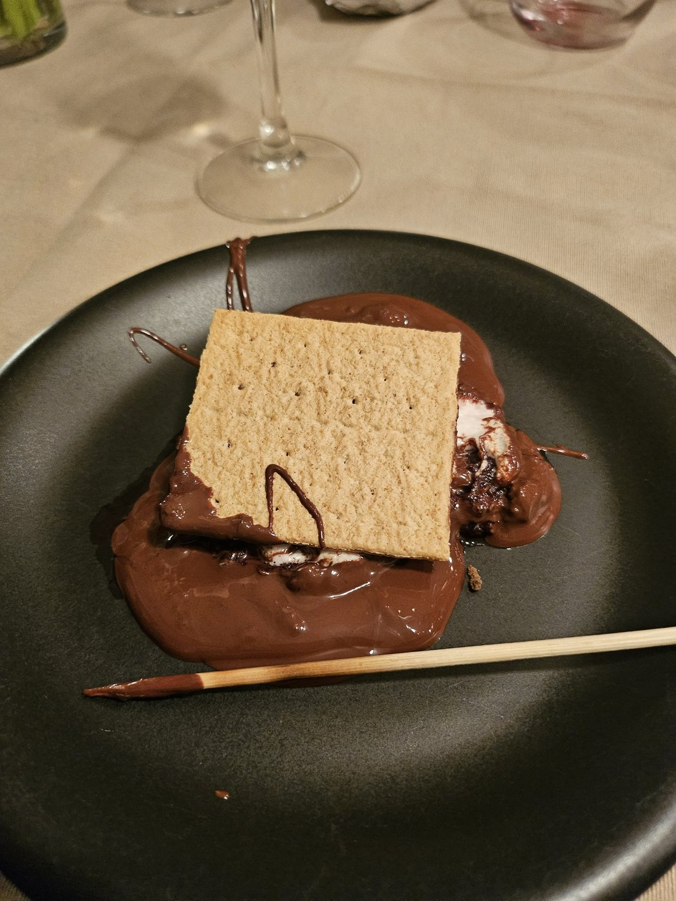
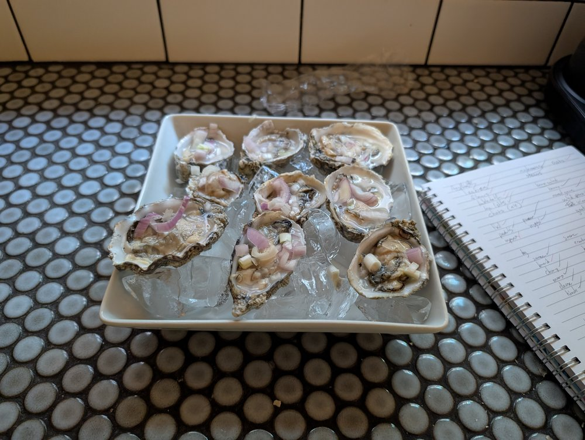
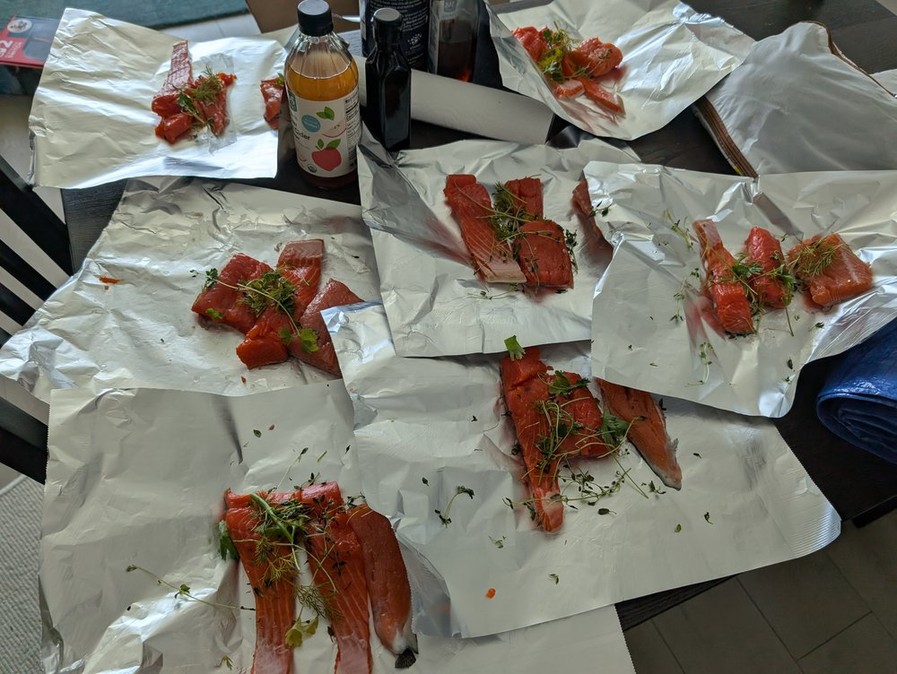
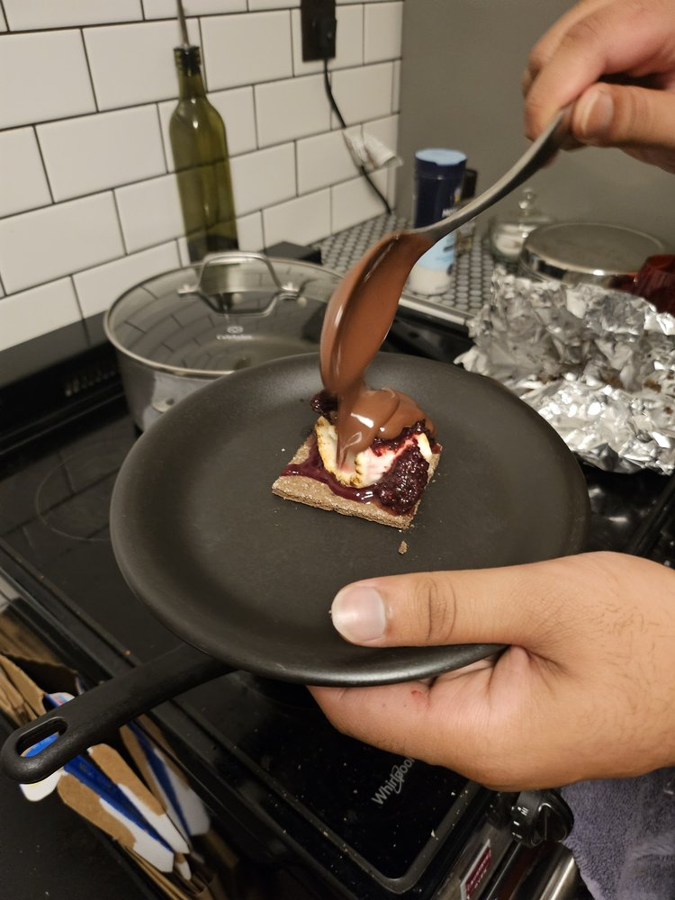

course one.COURSE 01 — CAP & CURRENT
Seasonal Selection
paired with Jonte.
DINNER 02 · INNO DINNER SERIES, S/S ’25

gear's out, indoors-camping in full effect// the planning
part send-off, part PNW summer excuse to camp indoors — this one doubled as a goodbye dinner for Abhishek, who moved out to New York.
“Tonight! Cap & Current → seasonal selection.
Foil / Salmon. ‘The Dog’ → once a s’more, always?”
— from the postcard menu, paired with Jonte, The Nod, and a Columbia Valley Malbec

the postcard, tonight's lineup
course one.COURSE 01 — CAP & CURRENT
paired with Jonte.

course two.COURSE 02 — FOIL / SALMON
paired with The Nod.

course three.COURSE 03 — “THE DOG”
paired with the Columbia Valley Malbec.
// the rest of the roll

the full oyster plate
before the foil closed up
the pour